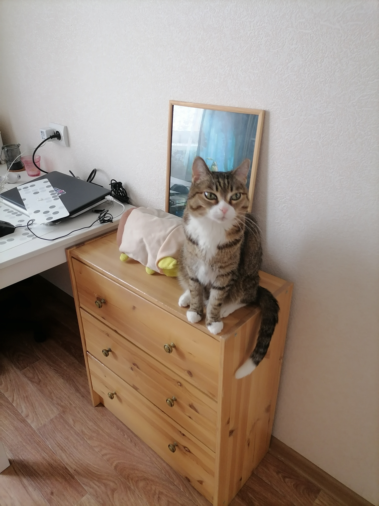
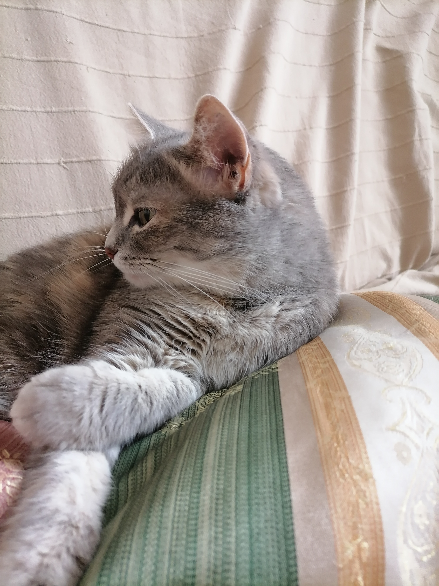

Все началось с задания... Можно было написать о многом, но в примерах мелькнули коты, и у меня просто не было выбора.
Не смейте меня осуждать!
Котяра

Этого нордического тигра принесла мне подруга. Мелкокот был ушаст, глазаст и крайне шкоден
Мотька

Мама сняла эту кошочьку с дерева. Характер вредный, склочный. Ну чисто кошла из советского мульта про Карлсона. Поэтому и имя такое.